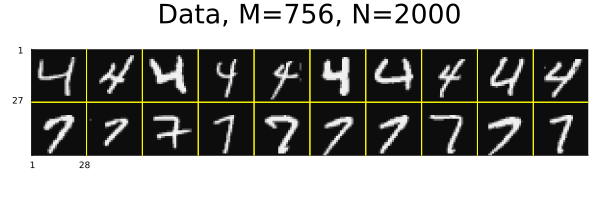
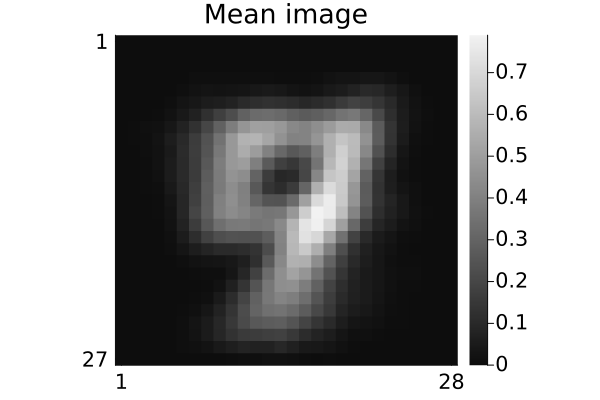
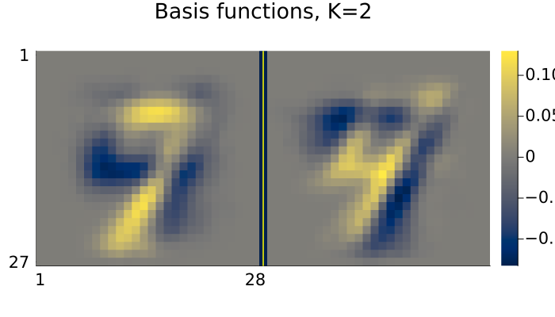
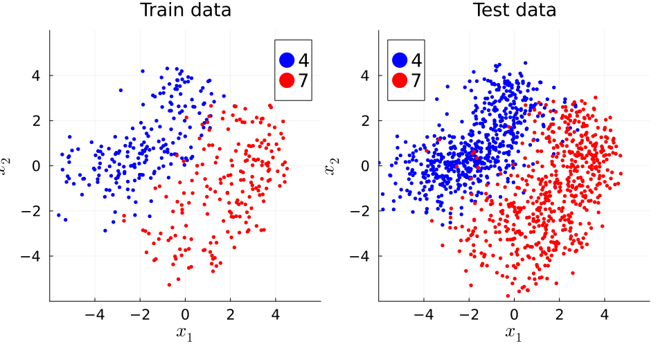
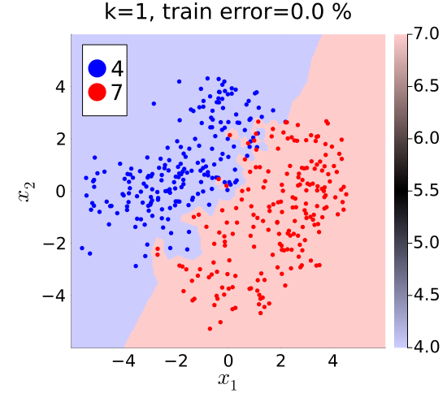
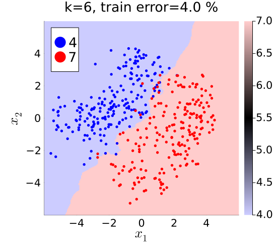
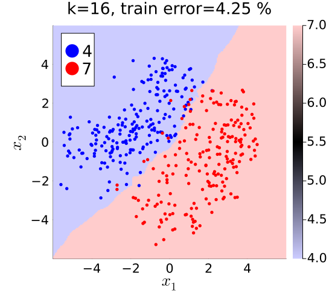
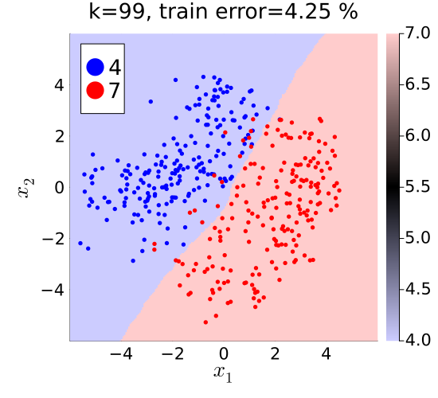
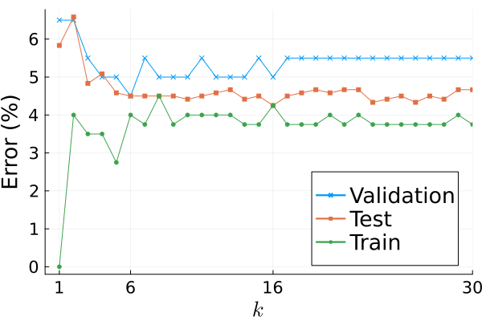

k-NN (k Nearest Neighbor) classifier demo
Illustrate K-nearest neighbors classifier with MNIST hand-written digit images in Julia.
This page comes from a single Julia file: k-nn.jl.
You can access the source code for such Julia documentation using the 'Edit on GitHub' link in the top right. You can view the corresponding notebook in nbviewer here: k-nn.ipynb, or open it in binder here: k-nn.ipynb.
Setup
Add the Julia packages used in this demo. Change false to true in the following code block if you are using any of the following packages for the first time.
if false
import Pkg
Pkg.add([
"InteractiveUtils"
"LinearAlgebra"
"MIRTjim"
"MLDatasets"
"NearestNeighbors"
"NMF"
"Plots"
])
endTell Julia to use the following packages. Run Pkg.add() in the preceding code block first, if needed.
using InteractiveUtils: versioninfo
using LaTeXStrings
using LinearAlgebra: svd
using MIRTjim: jim, prompt
using MLDatasets: MNIST
using NearestNeighbors: KDTree, knn
using Plots: default, gui, savefig, plot, plot!, scatter!, RGB, cgrad
using Random: randperm, seed!
default(); default(markersize=3, markerstrokecolor=:auto, label="",
tickfontsize=14, labelfontsize=18, legendfontsize=18, titlefontsize=18)The following line is helpful when running this file as a script; this way it will prompt user to hit a key after each figure is displayed.
isinteractive() ? jim(:prompt, true) : prompt(:draw);Load data
Read the MNIST data for some handwritten digits. This code will automatically download the data from web if needed and put it in a folder like: ~/.julia/datadeps/MNIST/.
if !@isdefined(data) || true
digitn = [4,7] # which digits to use
isinteractive() || (ENV["DATADEPS_ALWAYS_ACCEPT"] = true) # avoid prompt
dataset = MNIST(Float32, :train)
nrep = 1000 # how many of each digit
# function to extract the 1st `nrep` examples of digit n:
data = n -> dataset.features[:,:,findall(==(n), dataset.targets)[1:nrep]]
data = cat(dims=4, data.(digitn)...)
labels = vcat([fill(d, nrep) for d in digitn]...) # to check later
nx, ny, nrep, ndigit = size(data)
data = data[:,2:ny,:,:] # make images non-square to force debug
ny = size(data,2)
size(data) # (nx, ny, nrep, ndigit)
end(28, 27, 1000, 2)Look at some of the image data
pd = jim(data[:,:,1:10,:], "Data, M=$(nx*ny), N=$(nrep*ndigit)";
colorbar=nothing, size=(600,200), tickfontsize=6, ncol=10)
Partition data into train / validate / test
ntrain = 200
nvalid = 100
ntest1 = 600
seed!(0)
tmp = randperm(nrep)
itrain = (1:ntrain)
ivalid = (1:nvalid) .+ ntrain
itest1 = (1:ntest1) .+ (ntrain + nvalid)
dtrain = data[:,:,tmp[itrain],:]
dvalid = data[:,:,tmp[ivalid],:]
dtest1 = data[:,:,tmp[itest1],:];mean training image
dmean = sum(dtrain, dims = 3:4) / ntrain / ndigit
pm = jim(dmean; title="Mean image")
PCA-based dimensionality reduction
Use two components for easy visualization
X = reshape(dtrain .- dmean, nx*ny, :) # unfold
K = 2
U = svd(X).U[:,1:K];Show basis vectors
tmp = reshape(U, nx, ny, K)
pu = jim(tmp; title="Basis functions, K=$K", color=:cividis, size=(700,400))
prompt()Visualize embedded data
embed(data, n) = reshape(U' * reshape(data .- dmean, nx*ny, :), K, n, :)
Xtrain = embed(dtrain, ntrain) # (K, ntrain, ndigit)
Xvalid = embed(dvalid, nvalid)
Xtest1 = embed(dtest1, ntest1)
labeler(n) = vcat([fill(digitn[id], n) for id in 1:ndigit]...)
ytrain = labeler(ntrain)
yvalid = labeler(nvalid)
ytest1 = labeler(ntest1)
args = (;
xaxis = (L"x_1", (-1,1) .* 6, -4:2:4),
yaxis = (L"x_2", (-1,1) .* 6, -4:2:4),
aspect_ratio = 1,
size = (550, 500),
)
petr = plot(; title="Train data", args...)
pete = plot(; title="Test data", args...)
colors = (:blue, :red)
for id in 1:ndigit
scatter!(petr, Xtrain[1,:,id], Xtrain[2,:,id], label="$(digitn[id])",
color = colors[id])
scatter!(pete, Xtest1[1,:,id], Xtest1[2,:,id], label="$(digitn[id])",
color = colors[id])
end
pp = plot(petr, pete; size = (950, 500))
prompt()Construct k-NN classifier
data_tmp = reshape(Xtrain, K, ntrain*ndigit) # (K, ntrain)
tree = KDTree(data_tmp)
i2label = i -> getindex(ytrain, i)
function knn_class(point::AbstractVector, k::Int)
idx, _ = knn(tree, point, k)
labels = sort(i2label.(idx))
return labels[k÷2+1] # majority vote
end
x1_range = range(-6, 6, 221)
x2_range = range(-6, 6, 223)
α = 0.2
color = cgrad([RGB(1-α, 1-α, 1), :black, RGB(1, 1-α, 1-α)])
function knn_plot(k::Int, error)
tmp = [knn_class([x1; x2], k) for x1 in x1_range, x2 in x2_range]
p = jim(x1_range, x2_range, tmp; color,
title = "k=$k, train error=$error %",
prompt = false, args...,
)
for id in 1:ndigit
scatter!(p, Xtrain[1,:,id], Xtrain[2,:,id],
color = colors[id],
label = "$(digitn[id])",
)
end
return p
end;Classification errors
for train / validate / test
klist = 1:30
function errors(data, label, klist)
data = reshape(data, K, :) # (d, n)
return [count(knn_class.(eachcol(data), k) .!= label) for k in klist] /
size(data, 2) * 100
end
train_error = errors(Xtrain, ytrain, klist)
valid_error = errors(Xvalid, yvalid, klist)
test1_error = errors(Xtest1, ytest1, klist);Decision regions for various k
p1 = knn_plot(1, train_error[1])
p6 = knn_plot(6, train_error[6])
p16 = knn_plot(16, train_error[16])
p99 = knn_plot(99, only(errors(Xtrain, ytrain, [99])))
Plot error rates
pe = plot(
xaxis = (L"k", (0,30), [1; argmin(valid_error); argmin(test1_error); 30]),
yaxis = ("Error (%)", ),
)
plot!(klist, valid_error, marker=:x, label="Validation")
plot!(klist, test1_error, marker=:square, label="Test")
plot!(klist, train_error, marker=:o, label="Train")
# savefig(pe, "knn-error.pdf")
include("../../../inc/reproduce.jl")Status `~/work/EECS553demo/EECS553demo/docs/Project.toml`
[47edcb42] ADTypes v1.24.0
[e30172f5] Documenter v1.17.0
[2c06267c] EECS553demo v0.0.1 `~/work/EECS553demo/EECS553demo`
[b964fa9f] LaTeXStrings v1.4.1
[98b081ad] Literate v2.21.0
[7035ae7a] MIRT v0.18.3
[170b2178] MIRTjim v0.26.0
[eb30cadb] MLDatasets v0.7.21
[b8a86587] NearestNeighbors v0.4.29
[429524aa] Optim v2.2.2
[91a5bcdd] Plots v1.41.7
[10745b16] Statistics v1.11.4
[b77e0a4c] InteractiveUtils v1.11.0
[37e2e46d] LinearAlgebra v1.12.0
[44cfe95a] Pkg v1.12.1
[9a3f8284] Random v1.11.0This page was generated using Literate.jl.